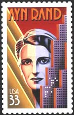 |
|
Dedicated to Greg Balkan,
a Swiss Objectivist, †1999
On the 22nd of April, 1999, the United States Postal Service has issued a stamp dedicated to the philosopher and novelist Ayn Rand, the author of Atlas Shrugged, philosophically the most challenging bestseller of its time. Her first novel, We the Living, was published in 1936. With the publication of The Fountainhead in 1943, she achieved a spectacular and enduring success. Miss Rand's unique philosophy, Objectivism, has gained a worldwide audience.
The fundamentals of her philosophy are set forth in four nonfiction books: Introduction to Objectivist Epistemology, For the New Intellectual, The Virtue of Selfishness, and Capitalism: The Unknown Ideal. The work: The Romantic Manifesto, is the magnificent statement of her artistic credo.
|
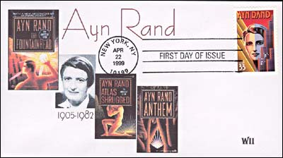 |
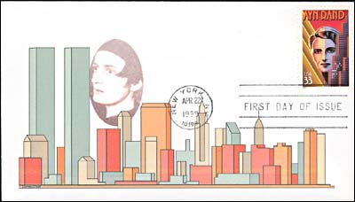 |
It is less known that Ayn Rand was a passionate stamps collector. Please find below some excerpt from her article Why I Like Stamp Collecting, originally appeared in the Minkus Stamp Journal in 1971. The text published below is taken from the book The Ayn Rand Column, Second Renaissance Books, ISBN 1-56114-099-6.
"I started collecting stamps when I was ten years old, but had to give up by the time I was twelve. In all the time since, I never thought to resuming the hobby. It left only one after-effect: I was unable to throw away an interesting looking stamp. So, I kept saving odd stamps, all these years; I put them into random envelopes and never looked at them again.
|
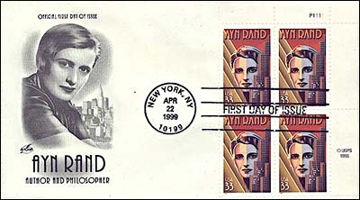 |
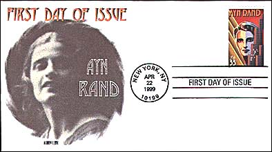 |
Then, about a year-and-a-half ago, I met a bright little girl named
Tammy, who asked me-somewhat timidly, but very resolutely-whether I received letters from
foreign countries and, if I did, would I give her the stamps. I promised to send her my
duplicates...
Once I started sorting out the stamps I had accumulated, I was hooked.
It was an astonishing experience to find my enthusiasm returning after more then fifty
years, as if there has been no interruption. Only now the feeling had the eagerness of
childhood combined with the full awareness, confidence and freedom of age... No, I have
not forgotten Tammy: I send her piles of duplicates every few months, and I feel very
grateful to her.
In all those years I had never found a remedy for mental fatigue. Now,
if I feel tired after a whole day of writing, I spend an hour with my stamps albums and it
makes me able to resume my writing for the rest of the evening. A stamp album is a
miraculous brain-restorer.
 |
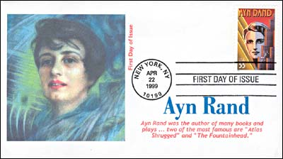 |
I am often asked why people like stamp collecting. So widespread a
hobby can obviously have many different motives. I can answer only in regard to my own
motives, which I have observed also in some of the stamps collectors I have met.
The pleasure lies in a certain special way of using one's mind. Stamp
collecting is a hobby for busy, purposeful, ambitious people - because, in patterns, it
has the essential elements of a career, but transposed to a clearly delimited, intensely
private world...
|
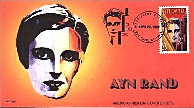 |
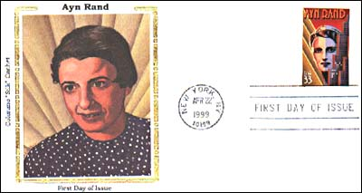 |
A career requires the ability to sustain a purpose over a long period of
time, through many separate steps, choices, decisions, adding up to a steady progression
to a goal... Purposeful people cannot rest by doing nothing... They seldom find pleasure
in single occasions, such as a party or a show or even a vacation, a pleasure that ends
right then and there, with no further consequences.
The minds of such people require continuity, integration, a sense of
moving forward. They are accustomed to working long-range... Yet they need relaxation and
rest from their constant, single tracked drive.
What they need is another track, but for
the same train - that is, a change of subject, but using part of the same method of mental
functioning. Stamp collecting fulfills that need..
The course of a career depends on one's own action predominantly, but
not exclusively. A career requires a struggle; it involves tensions, disappointments,
obstacles which are challenging, at times, but are often ugly, painful, senseless -
particularly, in an age like the present, when one has to fight too frequently against the
dishonesty, the evasion, the irrationality of the people one deals with.
|
In stamp collecting, one experiences the rare pleasure of independent action without irrelevant burdens or impositions. Nobody can interfere with one's collection, nobody need to be considered or questioned or worried about. The choices, the work, the responsibility - and the enjoyment - are one's own. So is the great sense of freedom and privacy. For this very reason, when one deals with people as a stamp collector, it is on a cheerful, benevolent basis. |
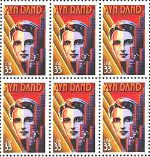 |
People cannot interfere, but they can be very
helpful and generous. There is a sense of "brotherhood" among stamp
collectors, of a kind that is very unusual today: the brotherhood of holding the same
values...
The pursuit of the unique, the unusual, the different, the rare is the
motive power of stamp collecting. It endows the hobby with the suspense and excitement of
a treasure hunt - even on the more modest level of collecting, where the treasure may be
simply an unexpected gift from a friend, which fills the one blank spot, completing a
set...
|
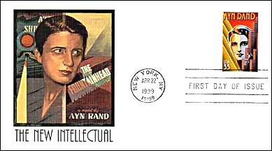 |
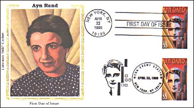 |
There is a constant change in the world of stamps, and constant motion, and a brilliant flow of color, and a spectacular display of human imagination... Speaking esthetically, I should like to mention the enormous amount of talent displayed on stamps - more than one can find in today 's art galleries. Ignoring the mug shots of some of the world's ugliest faces (a sin of which the stamps of most countries are guilty), one find real masterpieces of the art of painting..."
|
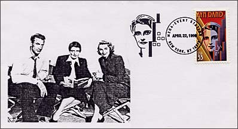 |
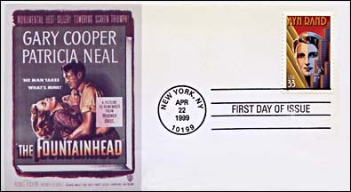 |
Background: School of Athens, by Raphael. This Souvenir Sheet was issued in 1983 by Sierra Leone, Scott # 580. Aristotle (in center, on the right) points with his right hand toward the earth; Plato, on his right, points with its hand toward heavens.
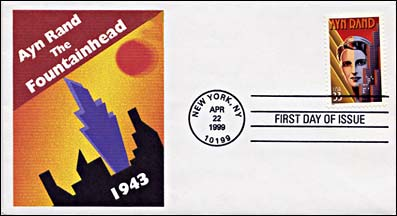
About the designer of the stamp
|
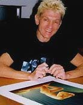 |
Nicholas Gaetano was born in Colorado Springs, Colorado. He studied advertising and illustration at the Art Center College of Design in California. After school he spent two years working in advertising agencies in Los Angeles and New York before becoming a freelance illustrator and designer. Gaetano has worked on award-winning television commercials and illustrations for books, magazines, advertising, posters, records, and CDs. His work is included in many corporate collections, and several of his poster designs are part of the permanent collection of the Library of Congress. Nicholas Gaetano’s art-deco designs have appeared on the covers of recent editions of Ayn Rand’s novels. His stamp artwork appropriately shows Rand alongside the Manhattan skyline, which she considered an alluring symbol of human achievement (after: Source). |
In an e-mail, Nick wrote to the author of this site that the design of the Ayn Rand stamp was influenced by art deco. The design was conceived in the 90's, so it represents a continuation of his ideas of that period, with some elements of movie poster design also involved.
Credits. Some of the First Day Covers courtesy of Mrs. Helen Fowler, USA, PASIC member. The sheet of Ayn Rand stamps: a posthumous courtesy of my late lamented friend Gregory Balkan from Switzerland.
Links: Ayn Rand Institute, Nick Gaetano
Bill Gates Martina Hingis Bertrand Piccard J.W von Goethe